baseLocked0
t20000 · plants 201 · CV 0.06 · genomes 111 · dom 0.045 · plan 48.5 · h 7.1
{"baseLocked":0} seed 1
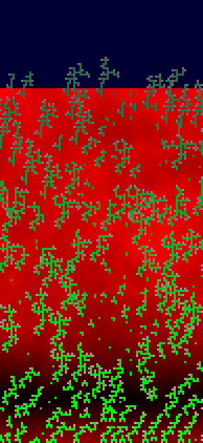
baseline-shake
t5000 · plants 221 · CV 0.07 · genomes 136 · dom 0.072 · plan 29.3 · h 6
{} seed 1
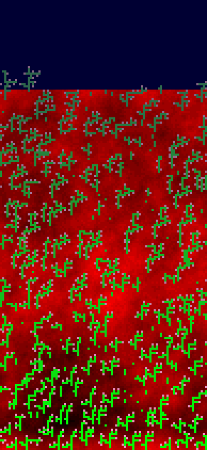
baseline
t6000 · plants 224 · CV 0.06 · genomes 138 · dom 0.04 · plan 32.8 · h 6.3
{} seed 1
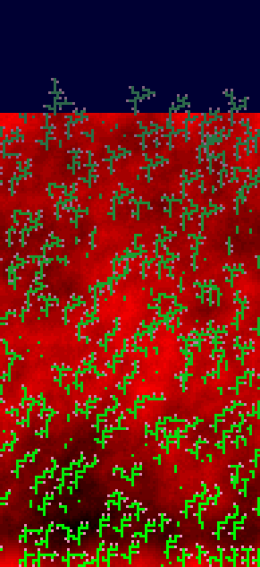
baseline20k
t20000 · plants 220 · CV 0.08 · genomes 124 · dom 0.036 · plan 43.5 · h 8.1
{} seed 1
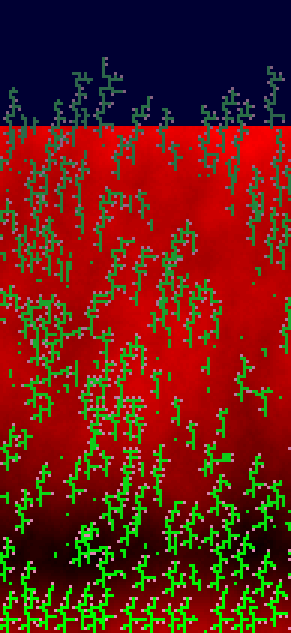
combo-20k
t20000 · plants 229 · CV 0.05 · genomes 130 · dom 0.048 · plan 38.3 · h 8.5
{"terrainLaw":1,"heightUnit":4,"fertilityLaw":1,"fertilityMin":3,"fertilityGateTick":1500} seed 1
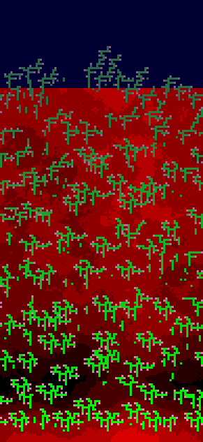
combo-shake
t500 · plants 0 · CV 0.00 · genomes 0 · dom 0 · plan 0 · h 0
{"terrainLaw":1,"heightUnit":4,"fertilityLaw":1,"fertilityMin":2} seed 1
dispersal-long
t20000 · plants 228 · CV 0.05 · genomes 151 · dom 0.026 · plan 47.4 · h 6.9
{"walkMin":50,"walkMax":300} seed 1
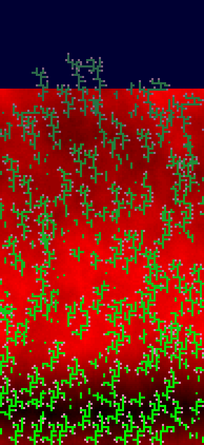
fast-annual
t20000 · plants 323 · CV 0.05 · genomes 173 · dom 0.037 · plan 39 · h 4.4
{"lifespan":64,"seedCost":48} seed 1
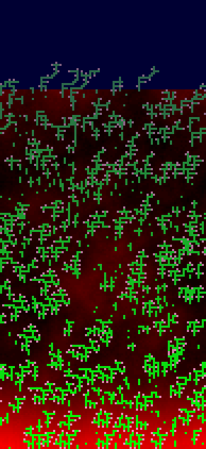
grace48-cost16
t20000 · plants 279 · CV 0.05 · genomes 158 · dom 0.029 · plan 30.4 · h 5.5
{"gracePeriod":48,"cellCost":16} seed 1
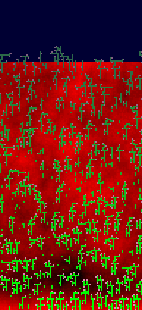
law1-h4-20k
t20000 · plants 237 · CV 0.05 · genomes 123 · dom 0.042 · plan 30.9 · h 8.2
{"terrainLaw":1,"heightUnit":4} seed 1
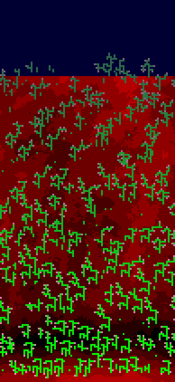
law1-h4-shake
t5000 · plants 238 · CV 0.07 · genomes 145 · dom 0.029 · plan 30.5 · h 7.1
{"terrainLaw":1,"heightUnit":4} seed 1
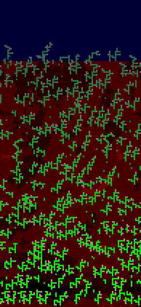
law1-h8-shake
t5000 · plants 256 · CV 0.04 · genomes 151 · dom 0.043 · plan 29 · h 5.9
{"terrainLaw":1,"heightUnit":8} seed 1
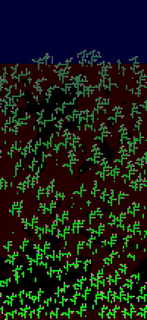
law2-f1-g1500-shake
t5000 · plants 259 · CV 0.04 · genomes 151 · dom 0.058 · plan 25.8 · h 5.5
{"fertilityLaw":1,"fertilityMin":1,"fertilityGateTick":1500} seed 1
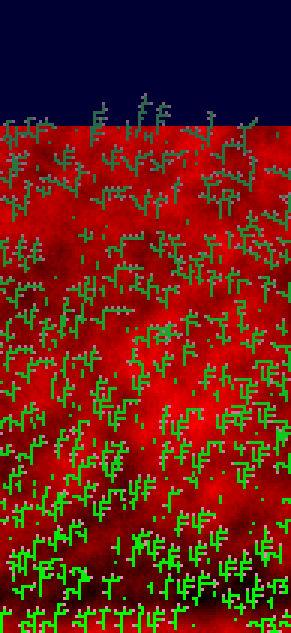
law2-f2-g1500-shake
t5000 · plants 262 · CV 0.04 · genomes 161 · dom 0.023 · plan 30.9 · h 5.3
{"fertilityLaw":1,"fertilityMin":2,"fertilityGateTick":1500} seed 1
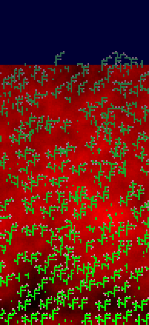
law2-f2-shake
t500 · plants 0 · CV 0.00 · genomes 0 · dom 0 · plan 0 · h 0
{"fertilityLaw":1,"fertilityMin":2} seed 1

law2-f5-20k-s7
t1750 · plants 67 · CV 0.54 · genomes 41 · dom 0.134 · plan 15.9 · h 5
{"fertilityLaw":1,"fertilityMin":5,"fertilityGateTick":1500} seed 7
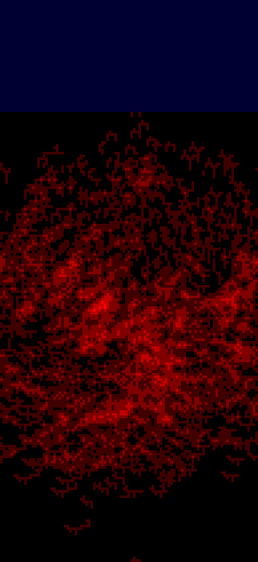
law2-f5-20k
t20000 · plants 209 · CV 0.19 · genomes 124 · dom 0.029 · plan 41.5 · h 7.2
{"fertilityLaw":1,"fertilityMin":5,"fertilityGateTick":1500} seed 1
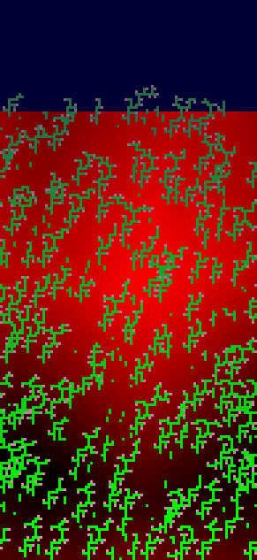
law2-f5-g1500-shake
t5000 · plants 30 · CV 0.27 · genomes 15 · dom 0.167 · plan 26.2 · h 6.2
{"fertilityLaw":1,"fertilityMin":5,"fertilityGateTick":1500} seed 1
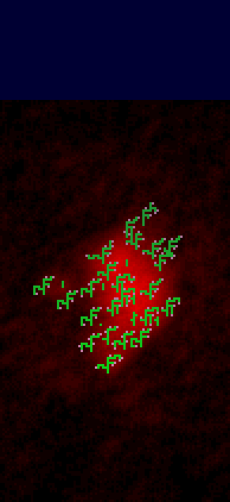
law2-f5-shake
t500 · plants 0 · CV 0.00 · genomes 0 · dom 0 · plan 0 · h 0
{"fertilityLaw":1,"fertilityMin":5} seed 1
ls-long
t20000 · plants 222 · CV 0.04 · genomes 122 · dom 0.036 · plan 35.9 · h 7.5
{"lifespan":1024} seed 1
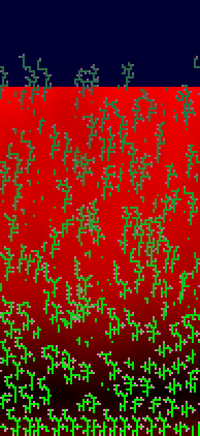
ls-short
t20000 · plants 182 · CV 0.07 · genomes 97 · dom 0.06 · plan 55.9 · h 7.2
{"lifespan":64} seed 1
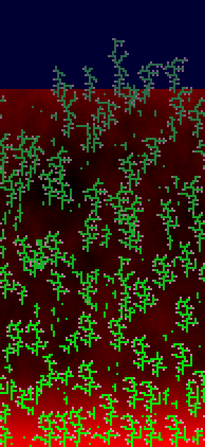
minexp90
t20000 · plants 235 · CV 0.07 · genomes 134 · dom 0.047 · plan 47.9 · h 5.3
{"minExpression":0.9} seed 1
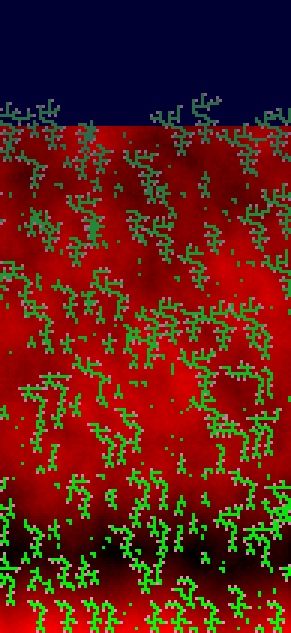
mut-high
t20000 · plants 229 · CV 0.06 · genomes 207 · dom 0.017 · plan 38 · h 7.5
{"mutationChance":0.75} seed 1
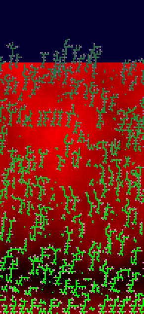
mut-low
t20000 · plants 195 · CV 0.07 · genomes 42 · dom 0.195 · plan 49.8 · h 6.9
{"mutationChance":0.05} seed 1
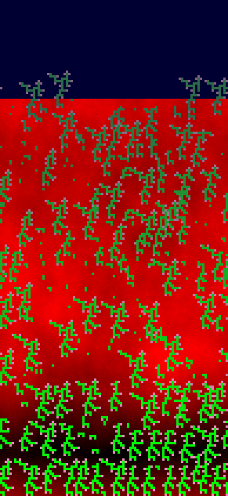
no-fullsun
t20000 · plants 247 · CV 0.05 · genomes 117 · dom 0.04 · plan 54.3 · h 16.8
{"fullSun":0} seed 1
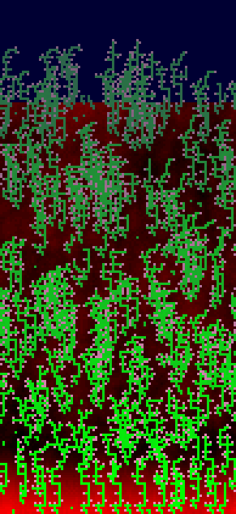
no-sprout3x3
t20000 · plants 323 · CV 0.06 · genomes 178 · dom 0.028 · plan 36 · h 5.5
{"sprout3x3":0} seed 1
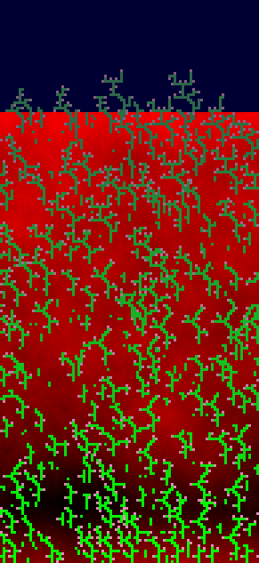
seed-cheap
t20000 · plants 344 · CV 0.06 · genomes 187 · dom 0.035 · plan 42.8 · h 4.6
{"seedCost":32} seed 1
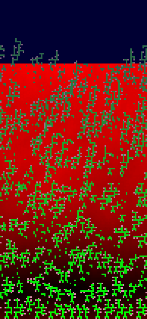
seed-expensive
t250 · plants 1 · CV 0.00 · genomes 1 · dom 1 · plan 2 · h 1
{"seedCost":384} seed 1
shade-harsh
t20000 · plants 196 · CV 0.06 · genomes 123 · dom 0.026 · plan 38.4 · h 5.3
{"shadeGrace":2} seed 1
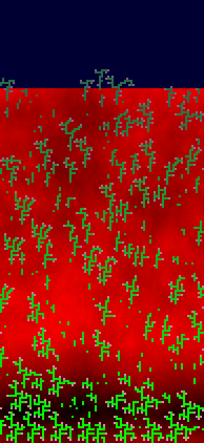
shade-lenient
t20000 · plants 221 · CV 0.07 · genomes 122 · dom 0.045 · plan 60.3 · h 15.3
{"shadeGrace":128} seed 1
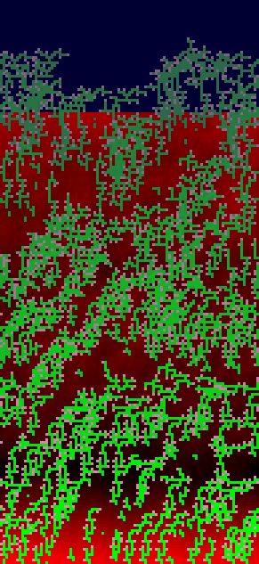
slot-high
t20000 · plants 185 · CV 0.07 · genomes 103 · dom 0.038 · plan 65.2 · h 7.7
{"slotChance":0.45} seed 1
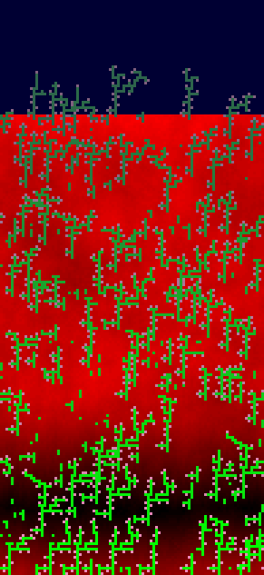
slot-low
t20000 · plants 209 · CV 0.07 · genomes 126 · dom 0.043 · plan 33.8 · h 7.4
{"slotChance":0.15} seed 1
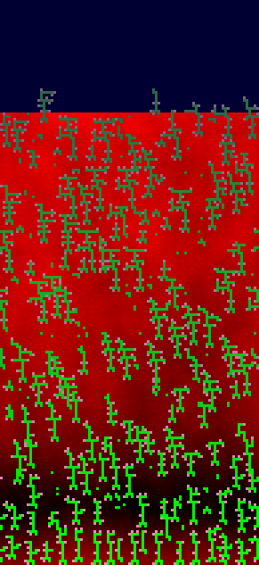
strikes-high
t20000 · plants 218 · CV 0.06 · genomes 127 · dom 0.037 · plan 44.3 · h 6.8
{"strikes":8} seed 1
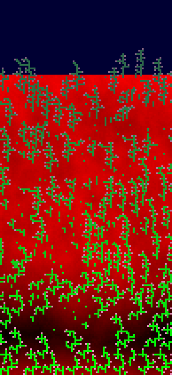
strikes-low
t20000 · plants 232 · CV 0.05 · genomes 159 · dom 0.026 · plan 26.4 · h 10.1
{"strikes":1} seed 1
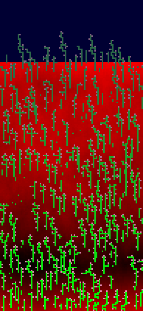
sun2-seed192
t20000 · plants 206 · CV 0.06 · genomes 120 · dom 0.053 · plan 42 · h 6.9
{"sunlight":2,"seedCost":192} seed 1
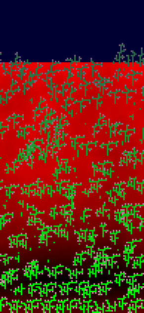
urn-flat
t20000 · plants 197 · CV 0.12 · genomes 109 · dom 0.041 · plan 46.7 · h 9.2
{"urnMode":"flat"} seed 1
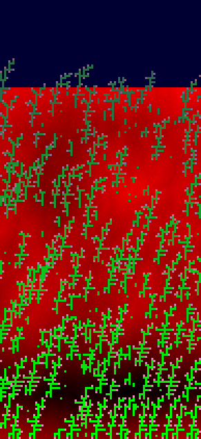
urn-mult2
t20000 · plants 195 · CV 0.08 · genomes 87 · dom 0.041 · plan 64.6 · h 5.9
{"urnMode":"mult","urnMult":2} seed 1
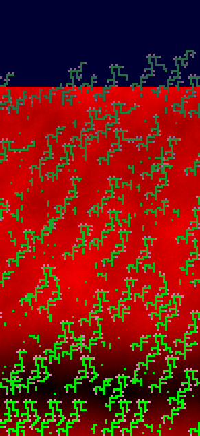
urn-mult3
t20000 · plants 158 · CV 0.10 · genomes 81 · dom 0.089 · plan 70.6 · h 8.1
{"urnMode":"mult","urnMult":3} seed 1
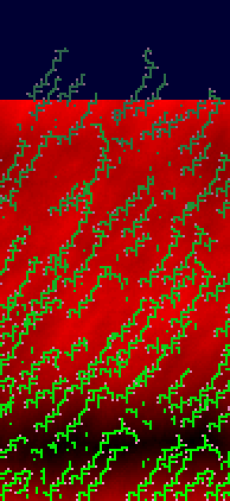
A · monolith piles
Whole corpses stack in their root row; steep repose keeps towers
{"litterProjected":0,"spillDiff":8}
B · terraced flats
Projected spread but spill only on steep slopes: stepped plateaus
{"spillDiff":10}
C · living terrain
Litter is elevation (fine steps) + steep repose; plants root on the hills
{"terrainLaw":1,"heightUnit":2,"spillDiff":6}
D · fertility rings
Colonies can only seed on their own graves; moderate repose
{"fertilityLaw":1,"fertilityMin":5,"fertilityGateTick":1500,"spillDiff":4}
E · full stack
Terrain + monolith deposition + fertility + dynasties (mut 0.1, strikes 2)
{"terrainLaw":1,"heightUnit":2,"spillDiff":8,"litterProjected":0,"fertilityLaw":1,"fertilityMin":4,"fertilityGateTick":1500,"mutationChance":0.1,"strikes":2}